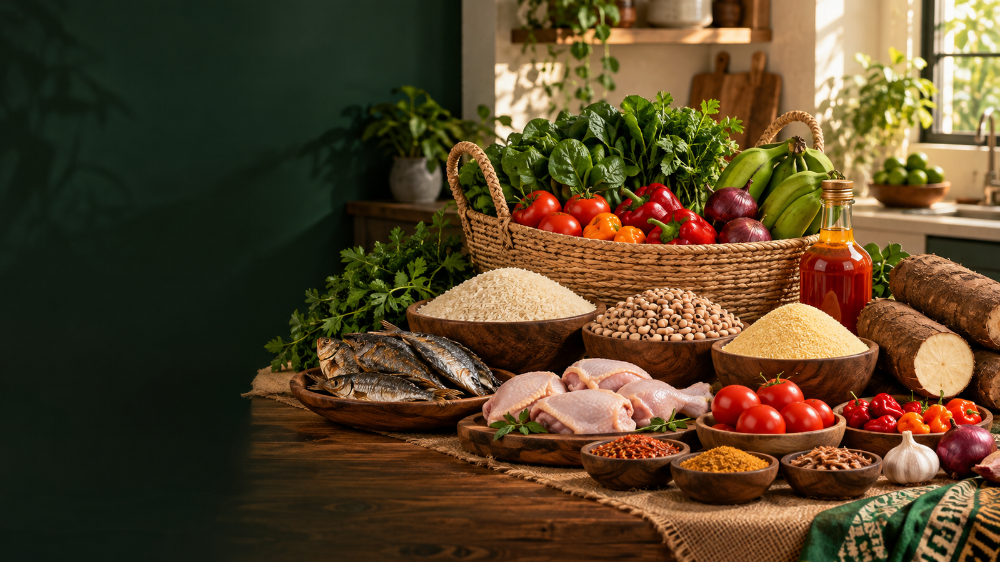

Biserry Groceries
Fresh Organic Foodstuff • Delivery & Pickup Available
Fresh Organic Foodstuff • Delivery & Pickup Available
Shop foodstuff, beverages, fresh items, and household essentials from Biserry Groceries. Select your items, choose quantity, and review your cart when you are ready.

Pick items and choose quantity.
Open your cart when you are done shopping.
Choose delivery or pickup and submit.
Products are loaded from Firebase. Products with varieties will show a variety selector.